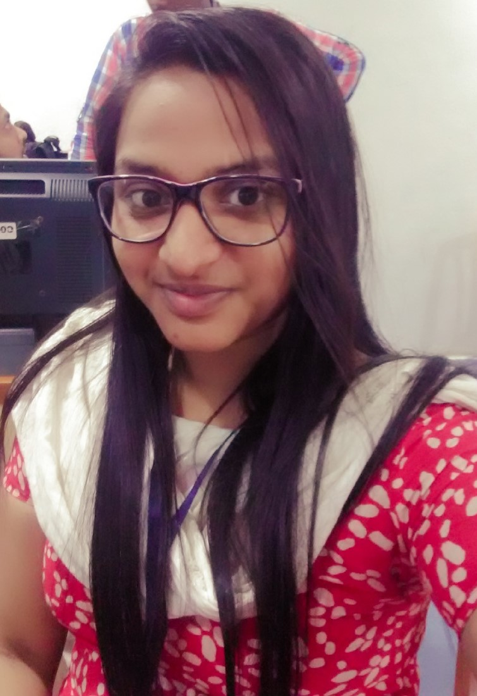

Disha Nayak

Summary
Seeking assignments as Frontend Developer/Web Developer
Education
-
2017-B Tech in Computer Science from Vignan Institute of Technology &
Management
-
2014-Diploma in Computer Science from Sanjay Memorial Institute Of
Technology
- 2011-10th from De Paul School Berhampur
Work Experience
- ASMACS SKILL DEVELOPMENT LTD:
Jul'17 - Jun'21
-
Responsible to monitor all the activities in center as per the SOP of
DDUGKY.
-
Adhere to set up the center as per the descent look and feel
prescribed in guideline.
- ASMACS SYSTEMS SOLUTIONS PVT LTD:
Jul'21 - Aug'22
-
Workstation is a web application, which mainly used to provide
services to credit card holders of synchrony and their clients. The
system is leveraged by over 100000 end users in 23 contact centres
across 5 countries. Authorized Executives will make use of this
application to avail services to end users.
-
Understand the design requirement and developed the web pages. Use
more generics CSS class for reusable purpose. Create services and
routing for performance optimization using React JS. Handle API call
using React component to bind the data. Environment: Html5, HTML,
JavaScript, Typescript, Bootstrap, CSS, Ajax, JSON, Angular Js
Skills
- HTML
- CSS
- JavaScript
- Angular Js
- React Js
Internship
May 2015 to July 2015: During my internship experiences I worked as a Data
analytics worked with team & during the period learned about the usage on
Dot Net & JavaScript during the project.
Others
@Disha Nayak. All rights reserved.